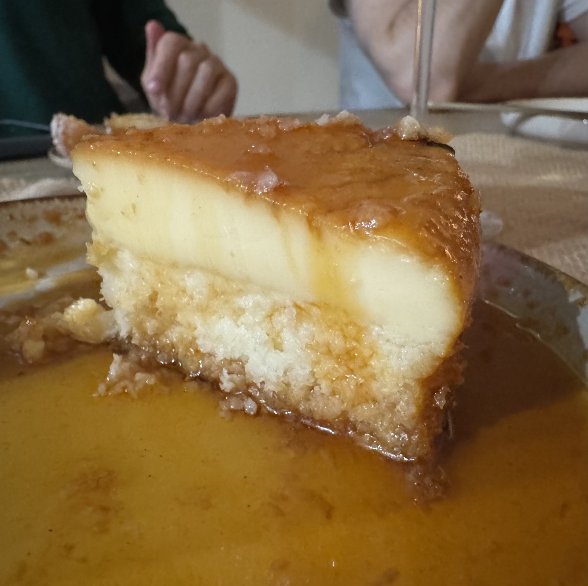

Flan coco
Ingrédients
8×
- 3 jaunes d'oeuf
- une boîte de lait concentré
- même dose de lait
- 150 g de coco râpée
- 3 blancs d'oeuf

Recette express.
Préparation
Étape 1
Mélanger 3 jaunes d'oeuf avec une boîte de lait concentré et la même dose de lait.
Étape 2
Ajouter 150 g de coco râpée.
Étape 3
Incorporer les 3 blancs d'oeuf montés en neige.
Étape 4 (Option 1)
Pour la version nappage chocolat, voir plus bas.
Pour la version fond caramel, recouvrir le fond du moule avec un caramel assez fort.
Étape 5
Verser le mélange dans le moule et enfourner au bain-marie pendant 30 min.
Étape 6 (Option 2)
Démouler et napper de chocolat (100g de crème liquide avec 100g de chocolat fondu).
Résumé
3 jaunes d'oeuf
une boîte de lait concentré
même dose de lait
Mélanger
150 g de coco râpée
Ajouter
3 blancs d'oeuf
Incorporer
recouvrir
enfourner bain-marie
napper de chocolat